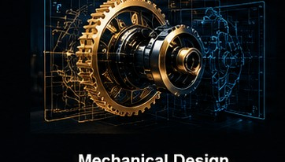
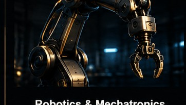
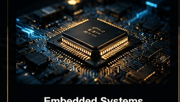
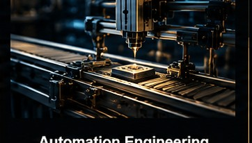
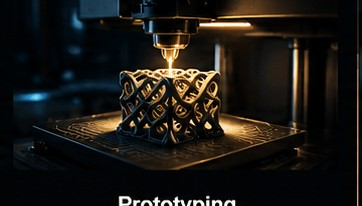
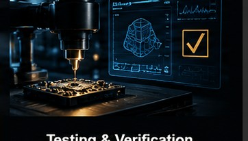
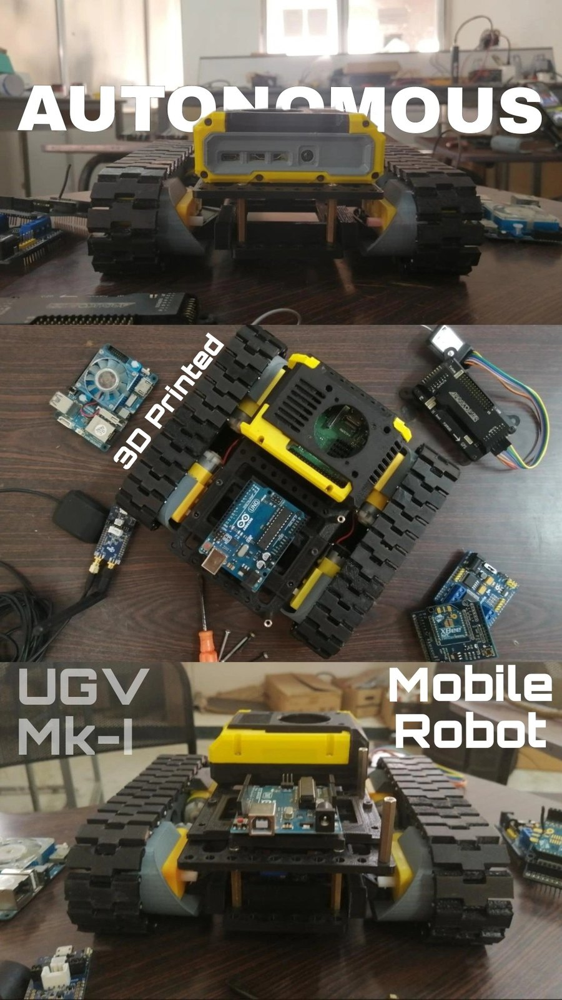

ENGINEERING · R&D · PRODUCT DEVELOPMENT
Complex challenges.
Engineered solutions.
We help businesses transform engineering challenges into practical solutions through product development, robotics, automation, embedded systems and hands-on prototyping.

Mechanical DesignProducts & Mechanisms
Robotics & MechatronicsIntegrated Systems
Embedded SystemsHardware & Firmware
Automation EngineeringCustom Solutions
PrototypingFrom Idea to Reality
Testing & VerificationFunctional ValidationWHAT WE DO
Engineering capabilities,
connected under one roof.
We combine relevant disciplines to develop solutions around the requirements, constraints and intended application.
Product R&D
Concept development, feasibility exploration and engineering design.
02 / MOTIONRobotics & Mechatronics
Integrated mechanical, electronic and control concepts.
03 / SYSTEMSElectronics & Embedded
Microcontrollers, sensor integration, firmware and prototypes.
04 / INDUSTRIALAutomation Engineering
Custom mechanisms and automation concepts for operational needs.
05 / BUILDRapid Prototyping
3D-printed parts, fit checks, assembly and design iteration.
06 / VERIFYTesting & Verification
Functional checks and measurements against agreed requirements.
OUR APPROACH
Built around the problem.
Not a predetermined product.
We start by understanding what needs to change, what constraints matter and what success looks like. Then we develop an appropriate engineering path—prototyping and testing where they add value.
Explore our process ↗01 — Problem-first thinking
Define the need before choosing a technical solution.
02 — Cross-disciplinary engineering
Connect mechanical, electronic and software elements where needed.
03 — Prototype-led development
Learn from physical builds and iteration.
04 — Transparent collaboration
Align on scope, milestones and deliverables.
SELECTED WORK
Engineering in progress.
 UNMANNED SYSTEMS
UNMANNED SYSTEMSPOSEIDON
Amphibious drone development.
 WEARABLE TECHNOLOGY
WEARABLE TECHNOLOGYAEGIS VEERA
Safety-oriented wearable development.

ROBOTICSGAIA
Modular autonomous ground vehicle development.
Concept illustrations are clearly labelled. Actual prototype photographs can be added when approved.
HOW WE WORK
From challenge to prototype.
A structured process keeps engineering decisions connected to the original requirements.
Discover
Requirements & constraints
Design
Concept & feasibility
Build
Prototype & integrate
Verify
Test & refine
Deliver
Handover & findings
HAVE AN ENGINEERING CHALLENGE?
Let's work out the right way forward.
Tell us what you're trying to build, improve or automate. We'll review the requirements and discuss a practical next step.